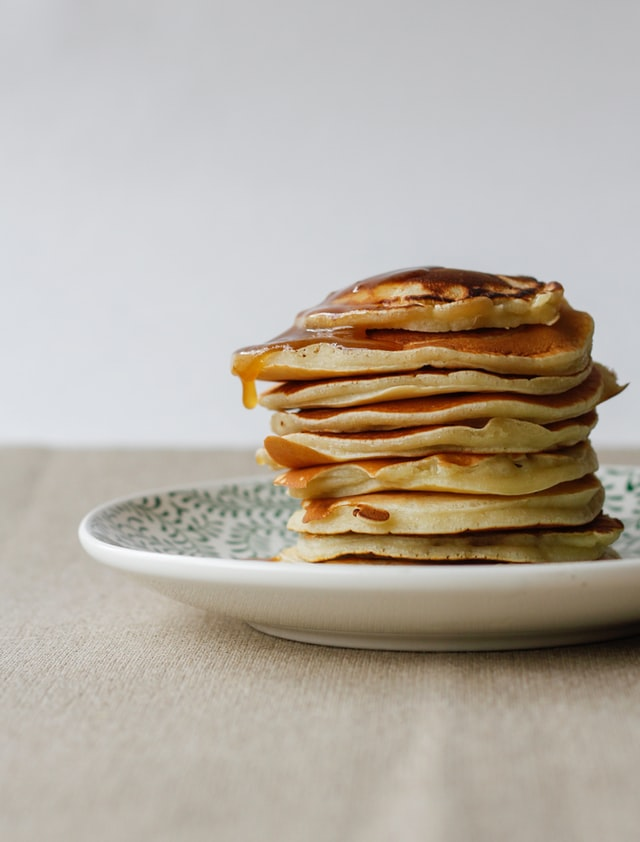

Lemon-ricotta pancakes

Description
These Lemon Ricotta Pancakes are some of the best pancakes you’ll ever eat! Just imagine your favorite pancake
recipe,
now add an Italian flair to it with creamy ricotta and fresh lemon. They’ve got to be good right?
These pancakes are melt-in-your-mouth soft and tender, they’re perfectly fluffy, and you’ll love that bit of
brightness
and tang from the lemon. These are the perfect pancakes for spring or summer and they’re likely to become a new
family
favorite!
Ingredients
- 3/4 cup cold water or milk
- 1/2 teaspoon baking soda
- 1/2 cup ricotta cheese
- 1 tablespoon grated lemon zest (just the yellow part of the skin)
- 1 tablespoon vegetable oil
- 1 tablespoon white sugar
- 1 large egg
- 1/8 teaspoon vanilla extract
- 2 tablespoon melted butter
- 1 tablespoon lemon juice
- 1 cup self-rising flour
- 2 tablespoon self-rising flour
Steps
- Whisk water and baking soda together in a mixing bowl. Add ricotta cheese, lemon zest, vegetables oil, sugar,
egg, and
vanilla. Whisk until smooth, breaking up lumps of cheese as you mix. Add melted butter, lemon juice, and 1 cup
plus 2
tablespoons self-rising flour. Whisk together, stirring until most of flour disappears into the batter.
- Let batter sit at room temperature about 15 minutes.
- Heat lightly greased cast iron skillet or griddle over medium-high heat. Portion out 1/4 cup scoops of batter
onto
skillet (cook in batches). When bubbles begin to form on the surface and the edges of the pancakes start to look
dry (2
to 3 minutes), flip and cook other side until cooked through, 2 to 3 minutes. Transfer to a warm plate.